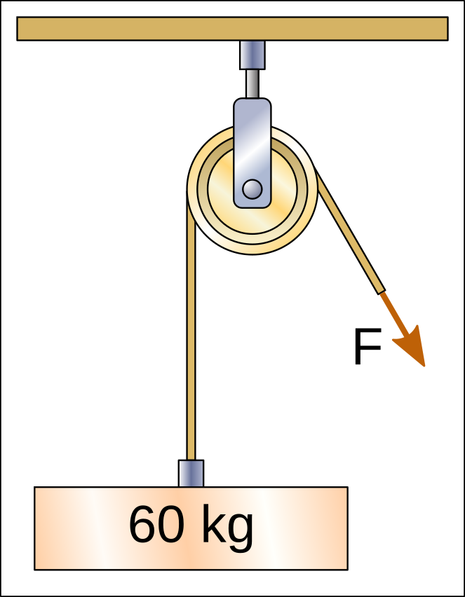
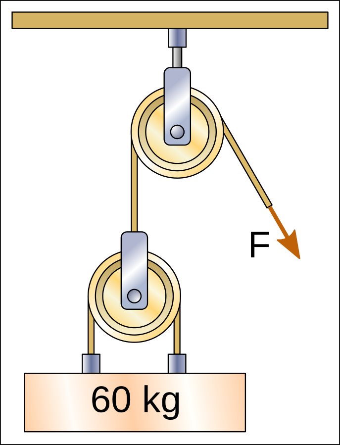
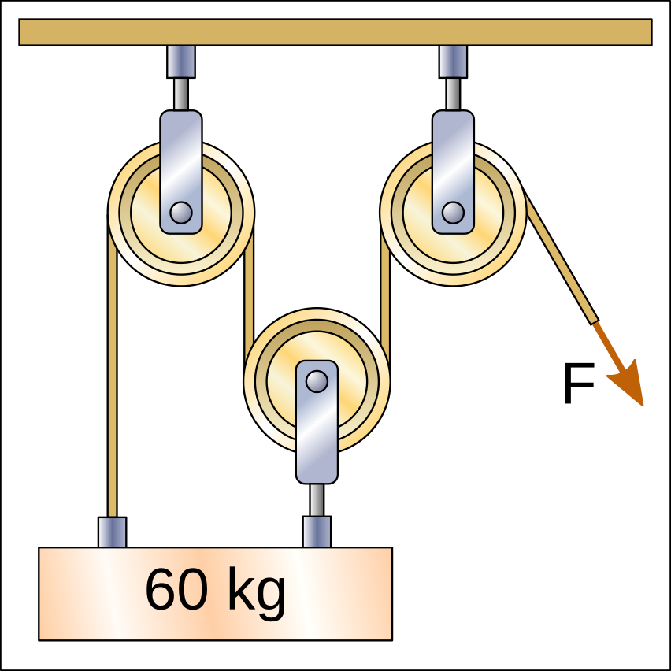
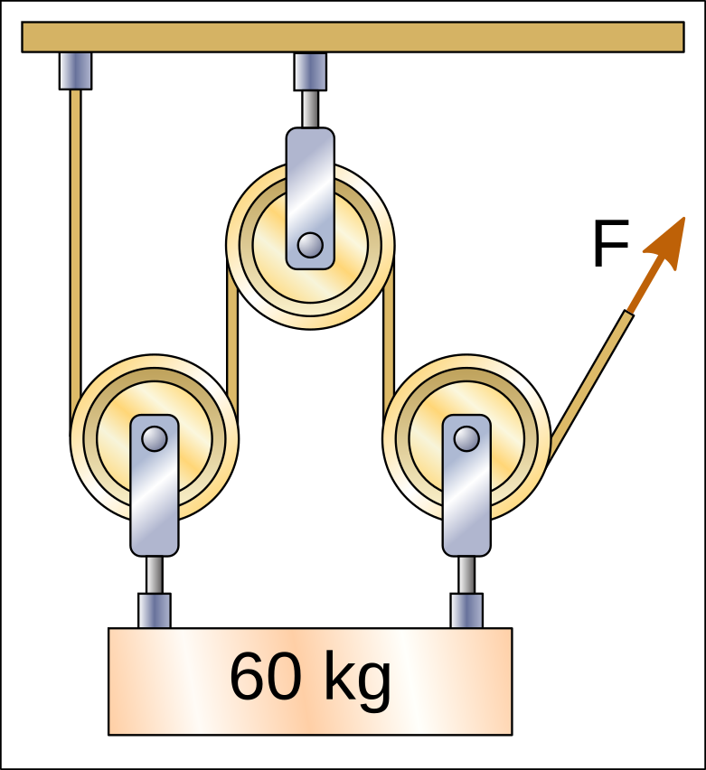

pulleas i: Índex:` PolypastOS`¶
Una politja és una màquina senzilla formada per una roda ranurada a través de la qual passa una corda.
Aplicacions de politges¶
La funció ** ** de la politja és desviar la direcció i la posició de la corda i, per tant, de la força de tensió aplicada.
D’aquesta manera, la corda ** Un pou ** pot elevar una galleda d’aigua fent que la força s’allunyi del Brocal, cosa que significa un avantatge per poder llançar d’una posició més còmoda.
Algunes ** cortines ** es poden obrir i tancar tirant dues cordes cap avall, al nivell de la nostra mà. La funció de les politges aquí és moure la força des del nivell de la nostra mà fins al sostre, on es troba el teló Raíl.
{kind=link}

{kind=link}


En tots els casos anteriors, les politges desvien la direcció i la posició de la força, però no redueixen la força necessària per aixecar el pes. Per tant, totes aquestes politges necessiten que el final de la corda s’estengui amb una força de 60 kgf (60 quilograms-força) per poder aixecar els pesos.
Polypastos¶
Un Polypest està format per almenys una politja mòbil, enganxat al pes que voleu moure. El Polypest pot elevar pesos amb avantatge mecànic, és a dir, pot aixecar un pes superior a la força aplicada a la corda.
Per calcular la força necessària per augmentar el pes, el pes s’ha de dividir pel nombre de seccions de corda que augmenten el pes.
A la següent facilitat, hi ha ** 2 seccions de corda ** que treuen el pes i, per tant, la força que es pot dur a terme per aixecar el pes està dividida per les dues seccions, amb un resultat de 30 kgf.


A la següent facilitat, hi ha ** 3 trams de corda ** que treuen el pes cap amunt i, per tant, la força a dur a terme per aixecar el pes està dividida per tres, amb un resultat de 20kgf.

{kind=link}

En el següent Polypest hi ha ** 4 trams de corda ** que treuen el pes cap amunt i, per tant, la força a dur a terme per aixecar el pes està dividida per quatre, amb un resultat de 15kgf.
{kind=link}


Tingueu en compte que de vegades les politges no estan enganxades al pes i, per tant, no compten quan calculeu la força amb la qual heu de tirar la corda.
A la següent facilitat, hi ha ** 2 trams de corda ** que treuen el pes cap amunt i, per tant, la força que s’ha de dur a terme per aixecar el pes està dividida pels dos, amb un resultat de 30 kgf.

A la següent facilitat, hi ha ** 3 trams de corda ** que treuen el pes cap amunt i, per tant, la força a dur a terme per aixecar el pes està dividida per tres, amb un resultat de 20kgf.

Pòlips nidius¶
Un Polypest pot tirar la corda d’una altra facilitat i en aquest cas trobem una polipasta imbricada. Cadascun dels polipastos divideix la força a dur a terme a la corda.
En el següent Polypest, la politja inferior es divideix entre ** dos trams de corda ** el pes de 60kg, de manera que la primera corda tindrà una tensió només de 30 kgf.
La politja superior es divideix entre ** dos trams de corda ** La força de la primera corda, de manera que la tensió serà de 15 kgf. Aquesta serà la Força F que s’ha de dur a terme per augmentar el pes.

Exercicis¶
Pulleta i exercicis Polypest per calcular la força amb la qual hem de tirar la corda per aixecar un pes.